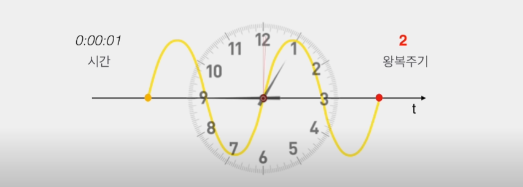
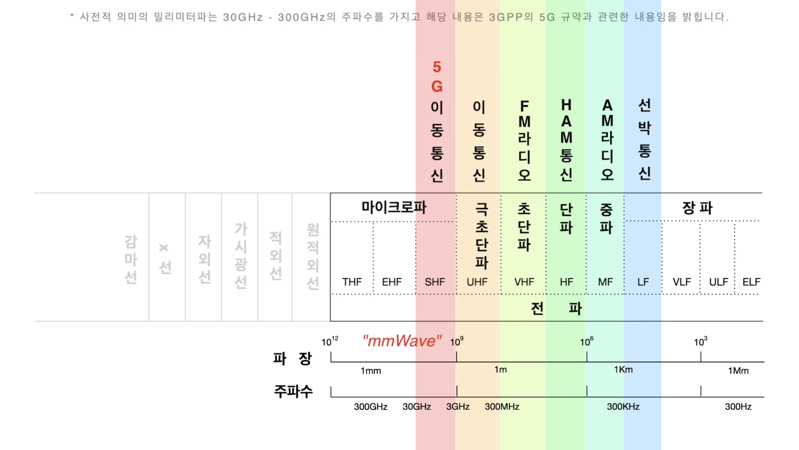

mmWave란 무엇인가?
가시광선 영역에서 우측으로 넘어오면 통신에서 사용하는 전파 영역이 있습니다.
왼쪽으로 가면 파장이 짧아지고 일정 시간을 두고 파장이 진동하는 수가 많아지게 되는데,
이때 1초에 전파가 진동하는 횟수를 주파수라고 합니다.
이 주파수를 통신의 관점에서 보면 신호를 보낼 수 있는 기회 즉 정보의 양이 됩니다.

아래 사진을 보면 왼쪽으로 갈수록 파장이 짧고, 주파수가 높아져 라디오 같은 음성 기반 통신들과 영상과 같은
고용량의 정보를 전달해야 하는 이동통신 간 좌우의 위치 관계를 알 수 있습니다.

왼쪽으로 갈수록 파장이 줄어들어 mm 단위에 이르게 되는 지점 이 근처가 5G가 활용하는 핵심 주파수인 mmWave입니다.